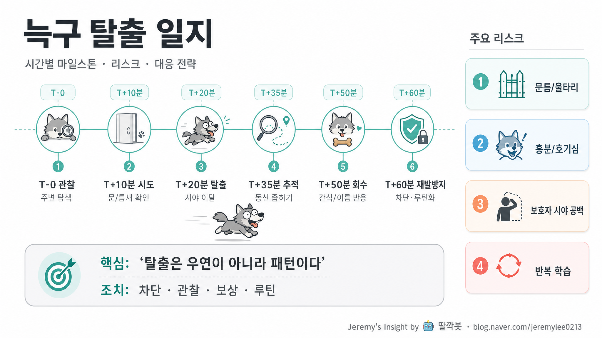

늑구 탈출 일지 시간별 마일스톤 분석 보고서

핵심 결론
- 🐺 늑구 탈출은 돌발행동이 아니라 탐색→시도→성공→반복학습의 패턴임
- 🚪 가장 중요한 통제점은 탈출 직전 10분, 즉 문틈·시야 공백·흥분 상태임
- ✅ 재발방지는 혼내기보다 차단 설계, 회수 루틴, 보상 학습으로 잡아야 함
한 장 요약 표
| 시간 | 마일스톤 | 늑구 행동 | 위험도 | 보호자 대응 | 핵심 판단 |
|---|---|---|---|---|---|
| T-0 | 관찰 | 문, 틈, 사람 움직임 탐색 | 낮음 | 시야 유지, 출입문 주변 정리 | 이미 탈출 조건을 학습 중 |
| T+10분 | 시도 | 문틈·울타리·현관 방향 접근 | 중간 | 이름 부르기보다 동선 차단 | 이 구간이 1차 차단점 |
| T+20분 | 탈출 | 시야 이탈, 빠른 이동 | 높음 | 뛰어쫓지 말고 안전거리 확보 | 추격전 만들면 더 멀어짐 |
| T+35분 | 추적 | 익숙한 냄새·길 따라 이동 | 높음 | 예상 동선 좁히기, 주변 협조 | 반경을 넓히기보다 좁혀야 함 |
| T+50분 | 회수 | 간식·목소리·익숙한 사람에 반응 | 중간 | 낮은 자세, 부드러운 호출 | 포획보다 귀환 유도 |
| T+60분 | 재발방지 | 같은 루트 반복 가능 | 중간 | 차단 장치, 산책 루틴, 보상학습 | 한 번 성공한 루트는 다시 씀 |
주요 분석
1. 탈출은 ‘기회’가 아니라 ‘학습 결과’다
늑구가 갑자기 탈출한 것처럼 보여도 실제로는 그 전부터 주변을 관찰했을 가능성이 높다. 문이 언제 열리는지, 사람이 어느 순간 시야를 놓치는지, 어느 틈이 몸에 맞는지 탐색했을 수 있다.
따라서 탈출 사건을 단순 해프닝으로 보면 재발 가능성이 높다. 핵심은 “왜 나갔나”보다 “어떤 조건이 열렸을 때 성공했나”를 찾는 것이다.
2. 시간별 핵심 구간은 T+10분이다
탈출 후 20분이 지나면 상황은 이미 추적 단계로 넘어간다. 실제로 가장 중요한 시간은 탈출 직전 10분이다.
이때 늑구는 문 근처를 맴돌거나, 보호자 움직임을 기다리거나, 흥분 상태에서 열린 틈을 노릴 수 있다. 즉 재발방지의 핵심은 탈출 후 대응보다 탈출 전 차단이다.
3. 추격은 본능적으로 상황을 악화시킬 수 있다
탈출한 늑구를 급하게 쫓으면 놀이 또는 위협으로 받아들일 수 있다. 그러면 더 빠르게 멀어지고, 도로·주차장·낯선 사람 쪽으로 이동할 위험이 커진다.
회수는 포획보다 귀환 유도 방식이 낫다. 낮은 자세, 부드러운 목소리, 익숙한 간식, 익숙한 사람의 등장처럼 긴장을 낮추는 신호가 중요하다.
4. 회수 후 혼내면 다음 회수가 어려워진다
돌아온 직후 혼내면 늑구는 “돌아가면 혼난다”고 학습할 수 있다. 다음 탈출 때 이름을 불러도 오지 않을 가능성이 커진다.
회수 직후에는 칭찬과 안정이 우선이다. 분석과 교정은 늑구가 진정한 뒤 환경 차단과 루틴 조정으로 해야 한다.
반대 의견과 리스크
| 관점 | 주장 | 반박/리스크 |
|---|---|---|
| “한 번쯤 그럴 수 있다” | 우연한 해프닝으로 볼 수 있음 | 한 번 성공한 루트는 반복 학습될 수 있음 |
| “혼내야 다시 안 한다” | 즉각 벌이 효과 있어 보임 | 귀환 행동까지 처벌하면 다음 회수 난이도 상승 |
| “이름 부르면 된다” | 평소엔 잘 오는 경우 많음 | 흥분·공포·야외 자극에서는 반응률 급락 가능 |
| “문만 잘 닫으면 된다” | 단순 해결처럼 보임 | 손님, 택배, 외출, 아이 출입 등 변수 많음 |
| “목줄만 하면 된다” | 산책 중엔 유효 | 실내/현관/울타리 탈출에는 별도 차단 필요 |
재발방지 체크리스트
| 영역 | 조치 | 우선순위 |
|---|---|---|
| 현관/문 | 이중문, 베이비게이트, 문 열림 전 대기 명령 | 상 |
| 울타리/틈 | 몸이 빠질 만한 틈 막기, 낮은 구간 보강 | 상 |
| 호출 훈련 | 이름→간식→귀환 보상 루틴 반복 | 상 |
| 산책 루틴 | 에너지 해소, 탈출 욕구 감소 | 중 |
| 가족 규칙 | 문 열 때 늑구 위치 확인 후 출입 | 상 |
| 회수 키트 | 간식, 리드줄, 사진, 연락처 준비 | 중 |
최종 판단 / 추천 액션
늑구 탈출 대응의 핵심은 “잡는 법”보다 “다시 못 나가게 만드는 구조”다. 특히 첫 성공 루트를 방치하면 늑구는 같은 조건을 다시 찾을 가능성이 높다.
추천 액션은 다음과 같다.
- 탈출 루트를 1개 문장으로 정의한다: “어디서, 언제, 어떤 틈으로 나갔는가”
- 해당 루트는 물리적으로 먼저 막는다
- 문 열림 전 대기 훈련을 짧게 반복한다
- 이름 부르면 오는 행동은 간식으로 보상한다
- 회수 후에는 혼내지 않고, 환경과 루틴을 수정한다
출처
- 사용자가 요청한 “늑구 탈출 일지” 주제를 기반으로 한 가상 사건 분석
- 반려견 행동관리 일반 원칙: 환경 차단, 긍정강화, 귀환 보상, 추격 회피, 반복 루트 차단
- 실제 사건 로그가 제공되지 않았으므로 시간표는 분석용 시나리오로 구성함
Jeremy's Insight by 🤖 딸깍봇 https://blog.naver.com/jeremylee0213